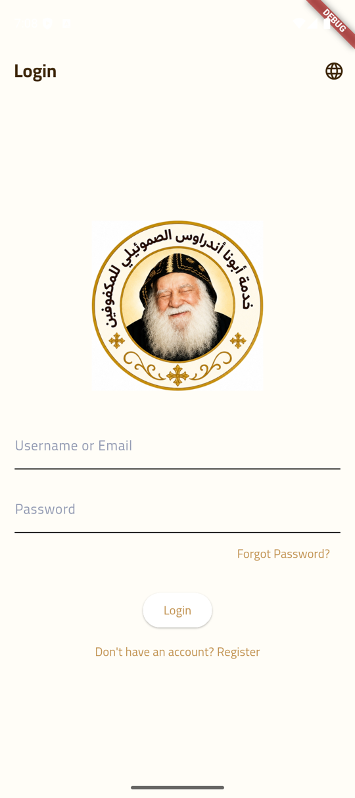
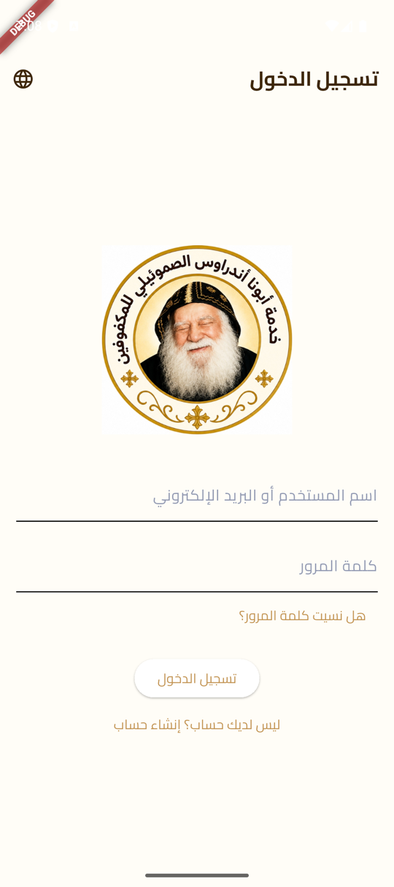
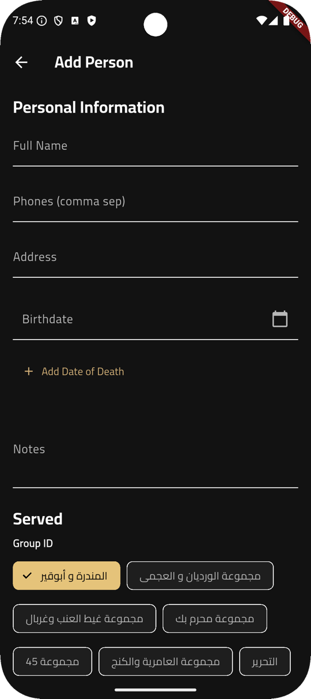
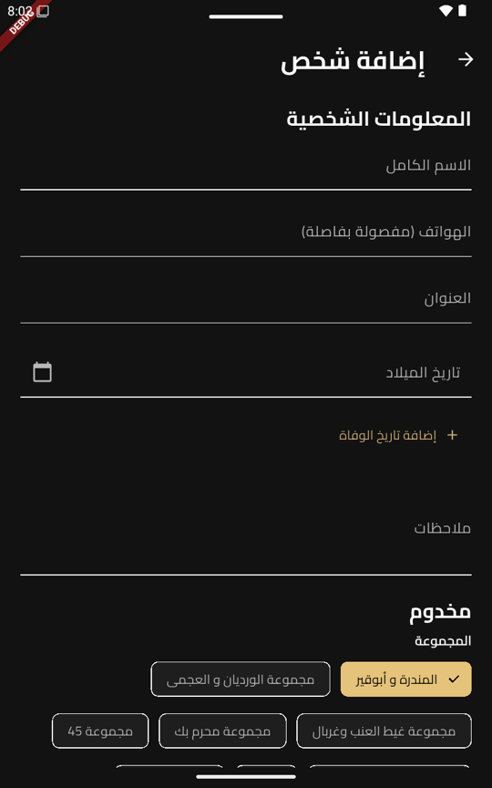
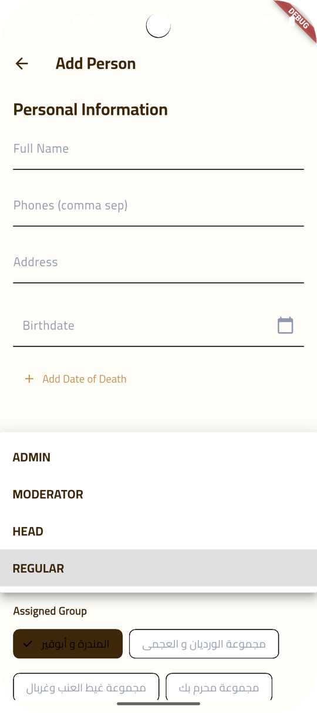
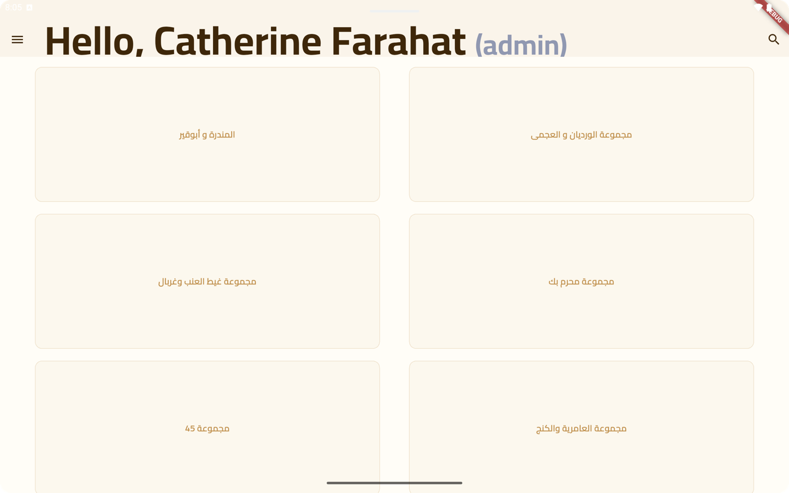
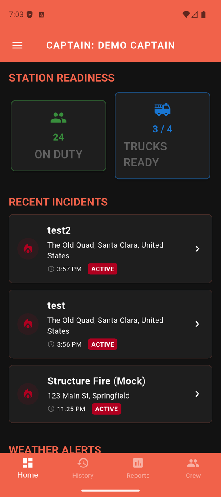
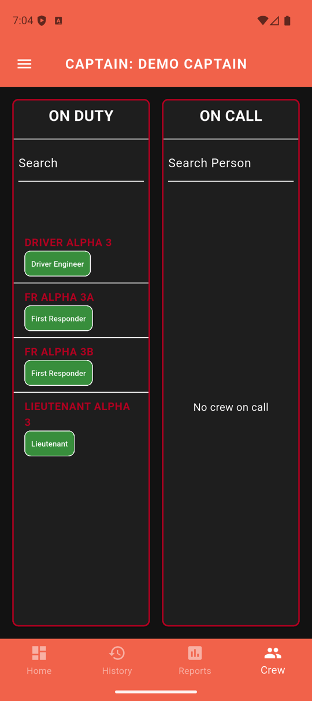
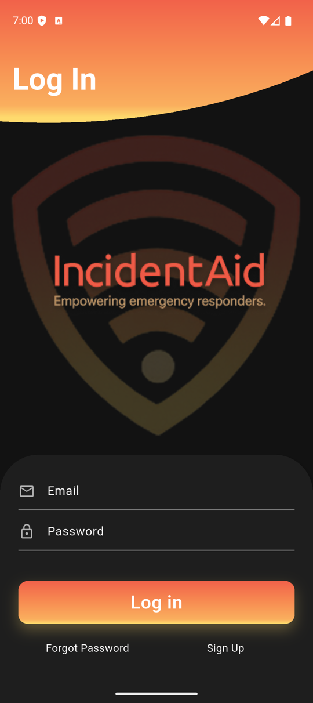

Software engineer who ships whole products — from Flutter UI down to backend and firmware.
I'm Catherine — an M.S. Computer Science & Engineering student at Santa Clara University
with 5+ years of programming experience. I build cross-platform mobile apps end to end,
and I do research on evaluating large language models.
Hover a project — or scroll across the row — to bring it into focus.
Volunteer Service Management App
FlutterFirebaseRiverpodCloud Functions
Built solo, from scratch, for a volunteer organization in Egypt: a bilingual
(Arabic/English) app that organizes records of the visually impaired and elderly
community members served, plus volunteers, groups, and announcements.
Role-based access with admin approval flows, audit logging, timezone-aware push
notifications (FCM + Cloud Functions), and compressed, cached image handling on
Firebase. Live on Google Play. The full right-to-left Arabic interface is a
first-class citizen, not an afterthought.






The admin dashboard on a tablet — the same codebase adapts to larger screens,
with service groups organizing the people served.
IncidentAid
FlutterFirebaseRiverpodGoogle MapsBLE
An incident-reporting and response-coordination app for firefighters, built at
Santa Clara University's EPIC Lab — primary lead developer.
Rearchitected the app end to end: Riverpod state management, a repository-pattern
data layer, a migration from Firebase Realtime Database to Firestore, and role-based
dashboards and navigation. Integrated Google Maps/Places, BLE beacon scanning, and
real-time alert flows, with isolated prod/dev Firebase environments.



Two-minute demo: PAR check-ins and Mayday flows propagating live across an iPhone
simulator, an Android phone, and a command tablet, all running against the same backend.
Hydration Automation
FlutterNode.js/ExpressArduino C++LoRaNFC
An IoT platform for real-time monitoring of agricultural hydration systems,
built at Santa Clara University's EPIC Lab.
Full-stack development across every tier: cross-platform Flutter app (NFC and QR device
onboarding, real-time sensor dashboards, localization), embedded firmware (Arduino/C++
on SAMD21 with LoRa: ACK-gated queueing, NTP clocks, telemetry), Express backend with
magic-link authentication, and the responsive public website localized in two languages with light/dark themes.
The same Flutter codebase runs as a native macOS desktop app with a responsive
wide-screen layout — shown in light and dark themes.
BeyondList
FlutterFirebaseSpring BootPostgreSQL
A real-time collaborative shopping-list and expense app for roommates and family —
deliberately built twice to learn two stacks: an original Flutter + Firebase version,
then a rewrite with a Java Spring Boot backend (OAuth2/JWT, JPA, PostgreSQL).
Co-founded Frona Tech and led a team of four engineers building a cross-platform
diet and fitness app. Took the product from concept to release on the App Store
and Google Play. The company has since wound down.
Research
Hover a topic — or scroll across the row — to bring it into focus.
MedicalQA — Caregiver QA Generation & Evaluation
AIM Lab, Santa Clara University · ongoing
LLMsRAGReact/ViteSupabase
Family caregivers of people with dementia rarely have time to sit through hours of
training videos. MedicalQA extends the AIM Lab's MentorQA framework into an LLM
system that generates caregiver question–answer pairs directly from dementia-care
training videos, so the guidance in them becomes searchable and conversational.
Generation quality is compared across several pipelines: a single-agent baseline,
multi-agent chunking, topic segmentation, and retrieval-augmented generation.
My contributions: I brought in the Teepa Snow dementia-care video dataset,
added reproducibility controls (seeding, temperature, and decoding configuration)
so pipeline comparisons are apples-to-apples, and built the human-annotation web
app (React/Vite + Supabase, deployed on Netlify) where annotators rate the
generated QA pairs, with every judgment stored in Supabase for analysis. I then
analyzed the judgments collected over the supported training videos to validate
the evaluation rubric itself.
McMiner — Misconception Mining for LLM Code Tutoring
Graduate research with the AIM Lab, Santa Clara University · Catherine Awad, Ruiwen Guan, Hanieh Hedayati (Advisor: Dr. Oana Ignat)
LLMsMisconception Miningpass@kEvoCodeBenchPython
Traditional LLM code tutors suffer from over-tutoring (giving away answers too early)
or vague hinting that wastes rounds. McMiner addresses this by introducing an active,
"misconception-in-the-loop" diagnostic framework: the tutor poses diagnostic code
scenarios, mines the student's specific underlying error pattern, and batch-injects
the misconception into subsequent prompt context so every hint directly targets the root flaw.
Evaluated using pass@1/5/10 across task difficulty tiers on the EvoCodeBench benchmark,
McMiner achieved significant accuracy gains — boosting Easy tasks (+9.4% pass@1) and
High-level student models (+5.2% pass@5) while reducing overall hint rounds needed to reach correct solutions.
To run multi-round benchmark evaluations, a fault-tolerant GPU harness was built with auto-pause/resume controls across server outages. An interactive side-by-side dialogue replay web app was also developed, featuring a live mode for running fresh sessions against real LLM APIs.
Medical Anomaly Detection with Vision-Language Models
Four-person team project
CLIPMVFALoRAPyTorch
Labeled medical imaging data is scarce, so we asked how much anomaly-detection
performance a general vision-language model can deliver on chest X-rays with only
a handful of labeled examples. We implemented and extended the MVFA (Multi-level
Visual Feature Adaptation) framework on top of CLIP (ViT-L/14): images and medical
text prompts are embedded into a shared space, and anomaly scores come from
comparing image features against descriptions of normal and abnormal findings.
Experiments ran on the RSNA pneumonia dataset (~29k chest radiographs, filtered
to a 17k-image benchmark), evaluated with AUROC across zero-shot and
2/4/8/16-shot regimes.
We ran sixteen controlled configurations to isolate what actually helps under
scarce supervision: adapter regularization, medical-domain prompt ensembling,
LoRA injected into the final ViT blocks, a lightweight MLP that regresses anomaly
scores directly from visual features, and a calibrated three-score fusion of
cosine similarity, Mahalanobis distance, and energy scoring. My focus was the
scoring side — implementing the anomaly-scoring methods and improving performance
through score fusion and regularization.
The experiments revealed a clean scaling picture: heavy regularization wins at
2-shot, learned score fusion at 4-shot, and direct MLP scoring dominates from
8-shot up — peaking at 0.884 AUROC at 16-shot, ahead of the original MVFA paper's
reported results. All experiments ran on NVIDIA V100s on the university's WAVE
HPC cluster, so there is no public repo; the report below holds the full
experiment matrix.
Full Research Report (PDF)
TTS & Voice Imitation
B.S. graduation thesis (team of six), Alexandria University · 2019
Tacotron 2Speech SynthesisDeep Learning
A neural text-to-speech system that generates speech in the voice of different
speakers — including speakers never seen during training. The system consists of
three separately trained models built around a Tacotron 2 synthesizer: it takes
text plus a reference voice and produces speech in that voice. We also built a
simple app to interact with the model.
Beyond the English models, we added an Egyptian-dialect Arabic dataset and
fine-tuned the system to generate realistic Arabic speech — a language where
dialectal TTS training resources are scarce. Expand below to view presentation slides and thesis report.
Presentation Slides & Voice Samples
Graduation Thesis (PDF)
Experience
May 2026 – Present
AI Research Assistant — AIM Lab, Santa Clara University
LLM generation-and-evaluation systems for dementia-caregiver QA and code tutoring.
2025 – Present
Software Engineering Research Assistant — EPIC Lab, Santa Clara University
Developing the lab's IoT and emergency-response applications, Hydration Automation and IncidentAid.
2021 – 2023
Co-Founder & Lead Engineer — Frona Tech, Egypt
Led a team of four engineers from concept to release on both app stores.
2019 – 2020
Teaching Assistant — Alexandria University
Taught classes and labs in Programming, Design of Algorithms, and Operating Systems.
Education
Jan 2025 – Dec 2026 (exp.)
M.S. Computer Science & Engineering — Santa Clara University
GPA 3.87
2019
B.S. Computer & Communications Engineering — Alexandria University
I've volunteered for 15+ years with elderly people, orphans, and people with disabilities
in Egypt, and since 2020 I've led volunteer training and coordination at the same
organization — the one I built the management app above for. The best software I've
shipped is the kind my own community depends on.